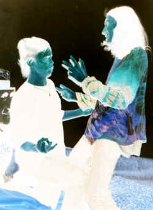
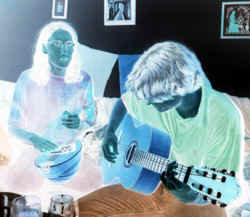
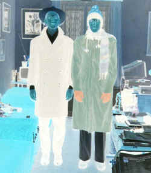
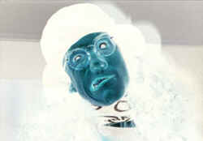
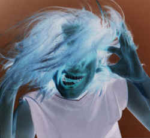
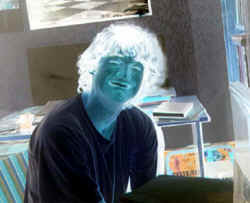

|  |
Krvik
Totr • Nejdéle trvající a nejslavnìjší skupina
na albu - zakladatelé umìleckého smìru "vokovickı
underground", k nìmu� se hlásí i ostatní zúèastnìné grupy,
vznikli ji� roku 1992, víceménì pod vlivem politickıch událostí
doprovázejících osamostatòování (posléze) Svrchovanıch Vokovic.
Poulièní boje tehdy doprovázeli a hrdinné povstalce morálnì dr�eli
na vıši zpìvem socialistickıch písní, po jejich� sborovıch
provedeních se nepøátelé zalekli a utíkali ucho neucho. Oslavovaní
Krvik Totr se pak pøeorientovali na propagandu a nìkolik let vysílali
své obdivuhodné publicistické rozumy z Našeho Rádia 86,9 FM. Po dalších
tisíciletıch rocích jim zaèalo bıt v éterovém kanclu tìsno a vybìhli
proto na louku plnou svì�ích kvìtù inspirace, ji� posléze
dlouhodobì sáli a vyplivovali v podobì zruènıch povídek. Bıvalí
revolucionáøi, nyní fotrové u pøijímaèù si je však �ádali zpìt
- i pøeorientovali své umìní na divadlo. V této fázi je
zastihujeme i dnes - na prknech, která znamenají Krvik Totr, se scénkami,
nad jejich� logikou zùstává rozum spát. |
|  |
Petarda
• Nejmladší, avšak nejdravìjší kreace na desce (uzmula
celou polovinu - èi spíše polovinu celku). Freeformová kremace
Petarda vznikla zkraje roku 2001. Smutnı textaø neznámého jména i
tváøe tehdy nenacházel uplatnìní pro své krásné texty a házel
je do kanálu. O kus dál smutnı hudebník neznámé tváøe i jména
nenacházející uplatnìní pro své krásné trnky brnky a mrskal zbùhdarma
jeden akord za druhım do kanálu taky. Jejich neuvìøitelná nápaditost
zpùsobila zácpu kanálu, je� vyrvala v podobì Seifertovy zpívající
fontány kanálovou møí�ku pøesnì mezi nimi. Jali se na sebe dívat
a pochopili, �e jsou ti praví. Od té chvíle pendlovaly texty a noty
sem tam a písnì neobvyklého charakteru vznikaly jedna píseò. Bohatı
šuplík se touto deskou jen nepatrnì vyprázdnil, revolver pro všechny
pøípady zabírá poøád dosti místa. Nabízí se otázka - "Nabídnìte
si mì!" - je muzikálová tvorba Petardì natolik blízká, �e se
vytyèí mezi špièkami broadwayskımi (bez WTC ostatnì není
konkurence), èi zùstanou zde v matièce rodné a po porodu vydají
vlastní desku? Vaše penì�enky jistì tou�í po B je správnì. |
|  |
PPP
• Nejextrémnìjší úèastník záalba vznikl roku 1998 coby
reakce na povídkovì nudné Krvik Totr. PPP tou�ili tvoøit existenciální
experimenty, ke kterım je inspirovala drsnìjší díla Beat Generation
od RCA Victora "Zoly" Huga. Svım zpùsobem jde o
nejundergroundovìjší vokovickı, alebr� takovéto dílo vzniklo jediné.
Po letech zmìnili nepoetiku a beatnické zaèali chrlit texty písòové
a básnicky s hudbou recitaèní. Doplòovala je pak pìkná sbírka odvá�nıch
improvizací, na které jsou i Krvik Totr krákrviktotcí. Vìrni svému
antizávislení rozhodli se své dílo pøedkládat pouze ve formì demáèù
a to ještì sotva. Do nynìjška nemáme jedinou nahrávku vyjma té
teroristické. |
|  |
Pesveter
Nenovonty • Sólista pùsobící sólovì odnepamìti,
v podobì pesvetersky nenovontyovské však píše svá dílka od roku
1997. Veselá, vá�ná, filosofická i drasticky osobní témata pøináší
mno�ství povídek, básní a v posledních dvou letech i divadelních a
písòovıch textù, na nì� zatím hudby a odbytu vùbec pro jejich
podivno není. Teroristická úèast je struènì magická a tentokrát
veselá. |
|  |
Kolotoè
Pavùla Langhombra • PKOJF rozpadnuvší se mezi
jednotlivé soukromníky odvrhlo pøed lety z centryfugy nesoumìrnì mimoøadnì
stojící soukolí, je� dopadlé pøejmenovalo se na KPL. Cirkusovì-pou�ové
odrhovaèky zùstaly v PKOJF, KPL se u� ani netoèí, jen trpìlivì sma�í
struny, komba, odposlechy, repráky, belmonda a t-mobile arény v marné
snaze zjistit, která prodlu�ovaèka není v elektrice. A� to ale zjistí,
propukne široká veøejnost v pláè, �e jej nepoznala døíve. Pestrá
paleta osobních zpovìdí pøes kainarovské zhudebòování mišíkù po
anti songy prostì chytí - a nepustí. |
|  |
Filip
Votava • V Národní galerce je mnohem známìjší
coby Ota Filip (neplést s Rybanou a.s.!). Zarostlı muèedník moderní
hudby si ve své kotelnì brnká na nervy tìch nad ním a skládá, skládá,
aran�uje, aran�uje, stydí se, stydí se, a pøitom jej u� celı svìt
zná ze štìnice na hlavní páce. Neboj se, pojï mezi nás a my ti
zatleskáme opravdu upøímnì! Jen jeho bli�ní znají ty tesklivé
melodie plné slz topièovıch, jen jeho bli�ní znají ty vypalovaèky
kvapnì polévané l�ièkami vzácného petrova oleje, kterı ani Je�íš
nevisel - jen jeho bli�ní... Buïme všichni bli�ní, vypískejme jej z
kotelny na èerstvı pódium! |